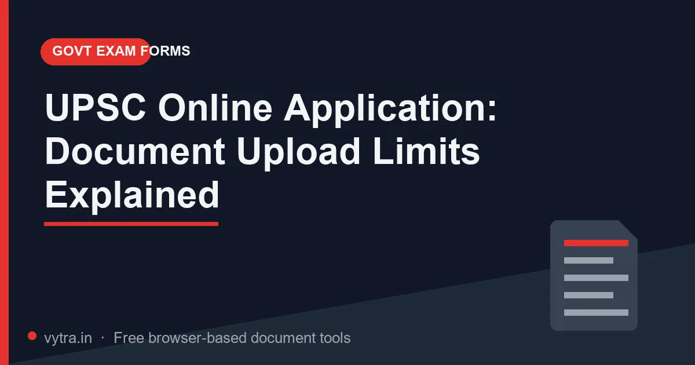

UPSC Online Application: Document Upload Limits Explained

The UPSC online application is one of the strictest document-upload experiences in Indian examinations. Every upload — photograph, signature, photo-identity proof, and certificates — has stated requirements, and the system validates each one before letting you pay and submit. The good news: once you understand how UPSC states its limits, the whole process is mechanical.
Quick answer: The exact size ranges, pixel dimensions and file types for each document live in the official notification PDF for your examination (download from upsc.gov.in) and are echoed on the application page itself. Verify your file's real size and dimensions, adjust to fit, then upload. The Vytra tools do the adjusting in your browser.
Note: UPSC revises upload specifications between examinations — including acceptable size ranges and image dimensions. Treat any number you read on a blog (including this one) as a method hint, and the notification for your exam as the law.
Where each rule is stated
- The notification PDF — the definitive table of document requirements: which files, which type, which size range, which dimensions.
- The application form's upload section — each field usually carries a live instruction line ("recent photograph … (format, size)") plus a preview after selection.
- The information brochure — clarifies photo age (recent, typically with a cut-off date), signature expectations, and what happens at physical verification.
Read all three once, before you start editing files. Most rejections trace back to skipping this step.
Check your files against the rules
For every document, verify four attributes:
- File size — file manager → Properties/Details. Compare against the stated range, then set your target 10% below the maximum (portals count bytes; leaving margin removes ambiguity).
- Pixel dimensions — image viewer → image info. UPSC photographs have specified pixel expectations — a camera's 3024×4032 is never acceptable.
- Format — JPG for photo and signature unless the notification says otherwise; PDF where certificates are asked as documents. Convert properly — never rename extensions.
- Content — correct person, correct document, clearly legible, no cropped edges, signature fully inside the frame.
Producing compliant files with free browser tools
- Photograph: crop to the required framing first, resize to the specified pixels, export JPG, then check the KB. If over the range, lower JPG quality one notch at a time until it lands inside the range with the face still sharp.
- Signature: black ink on white paper, photographed straight, tight crop, resize, export JPG within range.
- Certificates and proofs: scan at 150–200 DPI, grayscale if colour pushes weight over the limit, then compress. For hard limits, the Extreme preset + grayscale combination reliably lands single pages in the low hundreds of kilobytes — see real numbers in the marksheet compression guide.
- Multi-page documents: if the field expects a single certificate, split it out of your bundle first (the Split PDF guide shows page-range extraction).
- Re-check after every conversion. Each export changes size — the number you must satisfy is the one on the final file you select in the upload box.
What to expect: University-issued PDFs are often protected, colour and printed at 300 DPI — easily 3 to 8MB for a single document. Removing the password the institution applied to your own document, then Extreme + grayscale, typically brings such a file into the 100–250KB band with seals and text still legible. Verify the final number against your exam's limit before uploading.
The final check before you pay
Before paying the fee, open the application preview that UPSC shows at the end and verify each uploaded image actually renders the right file — a technically-passing upload can still be an old photograph or the wrong signature scan, because candidates reuse folders full of documents from previous attempts. Fee payment locks the application; mistakes then surface only during a correction window, if one exists. Two minutes spent on this preview beats weeks of regret, and a screenshot of the final preview costs nothing to keep.
Common UPSC upload failures and their real causes
- "Photograph … not as specified" — dimensions or age of the photo, not just size. A passport photo cropped from an old studio session may be sharp but stale; follow the recency rule in the brochure.
- Signature rejected — usually excess white space (signature floating in a huge frame) or a photo-of-a-photo that blurred the strokes. Crop tight, export fresh.
- Certificate upload fails silently — often a password-protected PDF or an oversized file the server stops reading; some servers return a generic failure for both.
- Payment blocked after uploads — one required field still in an invalid state. Scroll the form; every red-highlighted upload must show its confirmation.
Pro tips
- Prepare a "UPSC folder" before the form opens: photo (master + spec-compliant copy), signature, ID scan, category certificate — all pre-verified against last cycle's rules.
- Complete uploads early in the day. Deadline evening is when servers are slowest and validation timeouts most common.
- After final submission, download the completed application PDF and store three copies (drive, email to self, offline).
- Your uploaded photo follows you to the admit card and eventually to verification — keep the master consistent across attempts.
- Ignore third-party "form-filling agents" who ask for your documents over WhatsApp; every step above is a five-minute self-service task.
Frequently asked questions
Where are the exact UPSC upload sizes?
Can I use a phone photo for the UPSC photograph?
The university PDF is password-protected — can I still upload it?
Do I need colour scans of certificates?
Try it yourself: Open Compress PDF — free, private, and it runs entirely in your browser.
Open Compress PDF →